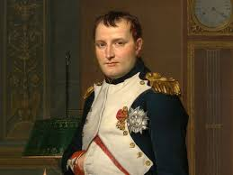

Quem foi Napoleão Bonaparte?
Napoleão Bonaparte foi um líder militar e político francês que se destacou na Revolução Francesa e mais tarde se tornou imperador da França. Ele é conhecido por suas conquistas militares e por estabelecer o Código Napoleônico, que teve um impacto duradouro nas leis de muitos países ao redor do mundo.
Ensinamentos de Napoleão Bonaparte
Napoleão era conhecido pela sua genialidade militar, mas também por seus ensinamentos sobre liderança e organização. Ele acreditava na importância da disciplina e da estratégia, sendo admirado por sua habilidade de tomar decisões rápidas em situações de alta pressão.
- Importância da disciplina: "A disciplina é a alma do exército." - Napoleão Bonaparte
- Visão estratégica: Napoleão enfatizava a necessidade de planejar a guerra com antecedência e antecipar os movimentos do inimigo.
O Legado de Napoleão Bonaparte
O maior legado de Napoleão foi o Código Napoleônico, um conjunto de leis que influenciou a legislação em diversos países. Sua habilidade em consolidar o poder e estabelecer uma administração eficiente também ajudou a modernizar a França. Além disso, sua figura de líder e estrategista militar ainda é estudada e admirada no mundo todo.